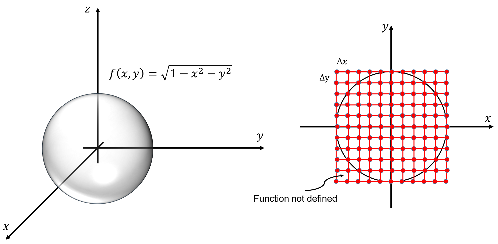

Monte Carlo Methods
University of Stavanger
Aug 14, 2023
Table of contents
Monte Carlo integration ''hit and miss''
Errors on Monte Carlo integration and the binomial distribution
Basic properties of probability distributions
Example: Monte Carlo integration of a hyper sphere
Monte Carlo methods
Monte Carlo methods are named after the Monte Carlo Casino in Monaco, this is because at its core it uses random numbers to solve problems. Monte Carlo methods are quite easy to program, and they are usually much more intuitive than a theoretical approach.
Monte Carlo integration ''hit and miss''
Let us start with a simple illustration of the Monte Carlo Method (MCM), Monte Carlo integration. To the left in figure 1 there is a shape of a pond. Imagine that we wanted to estimate the area of the pond, how could we do it? Assume further that you did not have your phone or any other electronic devices to help you.
Figure 1: Two ponds to illustrate the MCM.

One possible approach is: First to walk around it, and put up some bands (illustrated by the black dotted line). Then estimate the area inside the bands (e.g. 4$\times$3 meters). Then we would know that the area was less than e.g. 12m$^2$. Finally, and this is the difficult part, throw rocks randomly inside the bands. The number of rocks hitting the pond divided by the total number rocks thrown should be equal to the area of the pond divided by the total area inside the bands, i.e. the area of the pond should be equal to:
$$ \begin{equation} A\simeq\text{Area of rectangle}\times\frac{\text{Number of rocks hitting the pond}}{\text{Number of rocks thrown}}. \tag{1} \end{equation} $$It is important that we throw the rocks randomly, otherwise equation (1) is not correct. Now, let us investigate this in more detail, and use the idea of throwing rocks to estimate \( \pi \). To the right in figure 1, there is a well known shape, a circle. The area of the circle is \( \pi d^2/4 \), and the shape is given by \( x^2+y^2=d^2/4 \). Assume that the circle is inscribed in a square with sides of \( d \). To throw rocks randomly inside the square, is equivalent pick random numbers with coordinates \( (x,y) \), where \( x\in[0,d] \) and \( y\in[0,d] \). We want all the \( x- \) and $y-$values to be chosen with equal probability, which is equivalent to pick random numbers from a uniform distribution. Below is a Python implementation:
import numpy as np
def estimate_pi(N,d):
# random.seed(2)
D2=d*d/4; dc=0.5*d
A=0
for k in range(0,N):
x=np.random.uniform(0,d)
y=np.random.uniform(0,d)
if((x-dc)**2+(y-dc)**2 <= D2):
A+=1
# estimate area of circle: d*d*A/N
return 4*A/N
N=1000;d=2
pi_est=estimate_pi(N,d)
print('Estimate for pi= ', pi_est,' Error=', np.pi-pi_est)
In the table below, we have run the code for \( d=1 \) and different values of \( N \).
| MC estimate | Error | \( N \) | \( 1/\sqrt{N} \) |
| 3.04 | -0.10159 | 10$^2$ | 0.100 |
| 3.176 | $\,$0.03441 | 10$^3$ | 0.032 |
| 3.1584 | $\,$0.01681 | 10$^4$ | 0.010 |
| 3.14072 | -0.00087 | 10$^5$ | 0.003 |
We clearly see that a fair amount of rocks or numbers needs to be used in order to get a good estimate. If you run this code several times you will see that the results changes from time to time. This makes sense as the coordinates \( x \) and \( y \) are chosen at random.
The code above is not efficient and for MC simulations we usually have to use many random numbers. Instead of
for k in range(0,N):
x=np.random.uniform(0,d)
y=np.random.uniform(0,d)
one should avoid loops, and take advantage of build in functions in Numpy
x=np.random.uniform(0,d,size=N)
y=np.random.uniform(0,d,size=N)
Random number generators
There are much to be said about random number generators. The MCM depends on a good random number generator, otherwise we cannot use the results from statistics to develop our algorithms. Below, we briefly summarize some important points that you should be aware of:
- Random number generators are generally of two types: hardware random number generator (HRNG) or pseudo random number generator (PRNG).
- HRNG uses a physical process to generate random numbers, this could atmospheric noise, radioactive decay, microscopic fluctuations, which is translated to an electrical signal. The electrical signal is converted to a digital number (1 or 0), by sampling the random signal random numbers can be generated. The HRNG are often named true random number generators, and their main use are in cryptography.
- PRNG uses a mathematical algorithm to generate an (apparent) random sequence. The algorithm uses an initial number, or a seed, to start the sequence of random number. The sequence is deterministic, and it will generate the same sequence of numbers if the same seed is used. At some point the algorithm will reproduce itself, i.e. it will have certain period. For some seeds the period may be much shorter.
- Many of the PRNG are not considered to be cryptographically secure, because if a sufficiently long sequence of random numbers are generated from them, the rest of the sequence can be predicted.
- Python uses the Mersenne Twister algorithm to generate random numbers, and has a period of \( 2^{19937}−1\simeq4.3\cdot10^{6001} \). It is not considered to be cryptographically secure.
In Pythons random.uniform function, a random seed is chosen each time the code is run, but
if we set e.g. random.seed(2), the code will generate the same sequence of numbers each time it is called.
Encryption
This section can be skipped as it is not relevant for development of the numerical algorithms, but it is a good place to explain the basic idea behind encryption of messages. A very simple, but not a very good encryption, is to replace all the letters in the alphabet with a number, e.g. A=1, B=2, C=3, etc. This is what is know as a substitution cipher, it does not need to be a number it could be a letter, a sequence of letters, letters and numbers etc. The receiver can solve the code by doing the reverse operation.
The
weakness of this approach is that it can fairly easily be cracked, by
the following approach: First we analyze the encrypted message and find the frequency of each of the symbols.
Assume that we know that the message is written in English, then the
frequency of symbols can be compared with the frequency of
letters from a known English text (the most common is E (12$\%$), then T
(9$\%$), etc.). We would then guess that the most occurring symbol
probably is an E or T. When some of the letters are in place, we
can compare with the frequency of words, and so on. By the help of
computers this process can easily be automated.
A much better algorithm is to not replace a letter with the same symbol. To make it more clear, consider our simple example where A=1, B=2, C=3, \( \ldots \). If we know say that A=1 but we add a random number, then our code would be much harder to crack. Then the letter A could be several places in the message but represented as a complete different number. Thus we could not use the frequency of the various symbols to crack the message.
How can the receiver decrypt the message? Obviously, it can be done if both the sender and receiver have the same sequence of random numbers (or the key). This can be achieved quite simple with random number generators, if we know the seed used we can generate the same sequence of random numbers. If Alice where to send a message to Bob without Eve knowing what it is, Alice and Bob could agree to send a message that was scrambled using Pythons Mersenne-Twister algorithm with seed=2.
The weakness of this approach is of course that Eve could convince Alice or Bob to give her the seed or the key. Another possibility is that Eve could write a program that tested different random number generators and seeds to decipher the message. How to avoid this?
Let us assume that Alice and Bob each had their own hardware random generator. This generator generated random numbers that was truly random, and the sequence could not be guessed by any outsider. Alice do not want to share her key (sequence of random numbers) with Bob, and Bob would not share his key with Alice. How can they send a message without sharing the key? One possible way of doing it is as follows: Alice write a message and encrypt it with her key, she send the message to Bob. Bob then encrypt the message with his key, he sends it back to Alice. Alice then decrypt the message with her key and send it back to Bob. Now, Bob can decrypt it with his own key and read the message. The whole process can be visualized by thinking of the message as box with the message. Alice but her padlock on the box (keeps her key for her self), she sends the message to Bob. Bob locks the box with his padlock, now there are two padlocks on the box. He sends the box back to Alice, Alice unlocks her padlock with her key, and sends it back to Bob. The box now only has Bob's key, he can unlock the box and read the message. The important point is that the box was never unlocked throughout the transaction, and Alice and Bob never had to share the key with anyone.
Errors on Monte Carlo integration and the binomial distribution
How many rocks do we need to throw in order to reach a certain accuracy? To answer this question we need some results from statistics. Our problem of calculating the integral is closely related to the binomial distribution. When we throw a rock one of two things can happen i) the rock falls into the water, or ii) it falls outside the pond. If we denote the probability that the rock falls into the pond as \( p \), then the probability that it falls outside the pond, \( q \), has to be \( q=1-p \). This is simply because there are no other possibilities and the sum of the two probabilities has to be one: \( p+q=p+(1-p)=1 \). The binomial distribution is given by:
$$ \begin{equation} p(k)=\frac{n!}{k!(n-k)!}p^k(1-p)^{n-k}. \tag{2} \end{equation} $$\( p(k) \) is the probability that an event happens \( k \) times after \( n \) trials. The mean, \( \mu \), and the variance, \( \sigma^2 \), of the binomial distribution is:
$$ \begin{align} \mu&=\sum_{k=0}^{n-1}kp(k)=np, \tag{3}\\ \sigma^2&=\sum_{k=0}^{n-1}(k-\mu)^2p(k)=np(1-p). \tag{4} \end{align} $$The mean of a distribution is simply the sum divided by the count, the symbol \( \mu \) or \( \overline{x} \) is usually used. For \( N \) observations, \( x_i \), \( \mu=\sum_i x_i/N \). The mean is just an average, it could e.g. be the sum of all the heights of students in the class divided by the number of students. The mean would then be the average height of all the students in the class.
The variance is calculated by taking the difference between each of the data points and the mean, square it, and sum over all data points. Usually the symbol \( \sigma^2 \) is used, \( \sigma^2=\sum_i(\mu-x_i)^2/N \). The variance measures the spread in the data. Furthermore, it squares the distance between the mean and the individual observations, meaning that the points lying far a way from \( \mu \) contributes more to the variance.
Before we proceed, we should take a moment and look a little more into the meaning of equation (2) to appreciate its usefulness. A classical example of the use of the binomial formula is to toss a coin, if the coin is fair it will have an equal probability of giving us a head or tail, hence \( p=1/2 \). Equation (2), can answer questions like: ''What is the probability to get only heads after 4 tosses?''. Let us calculate this answer using equation (2), the number of tosses is 4, the number of success is 4 (only heads each time)
$$ \begin{equation} p(k=4)=\frac{4!}{4!(4-4)!}\frac{1}{2}^4(1-\frac{1}{2})^{4-4}=\frac{1}{2^4}=\frac{1}{16}. \tag{5} \end{equation} $$''What is the probability to get three heads in four tosses?'', using the same equation, we find:
$$ \begin{equation} p(k=3)=\frac{4!}{3!(4-3)!}\frac{1}{2}^3(1-\frac{1}{2})^{4-3}=\frac{4}{2^4}=\frac{1}{4}. \tag{6} \end{equation} $$In figure 2, all the possibilities are shown. The number of possibilities are 16, and there are only one possibility that we get only heads, i.e. the probability is 1/16 as calculated in equation (5). In the figure we also see that there are 4 possible ways we can get three heads, hence the probability is 4/16=1/4 as calculated in equation (6).
Figure 2: The famous Norwegian Moose coin, and possible outcomes of four coin flips in a row.

Now, let us return to our original question, ''What is the error on our estimate of the integral, when using the MCM?''. Before we continue we should also clean up our notation, let \( I \) be the value of the true integral, \( A \) is our estimate of the integral, and \( I_N \) is the area of the rectangle. First, let us show that the mean or expectation value of the binomial distribution is related to our estimate of the area of the pond or the circle, \( A \). In our case we draw \( n=N \) random numbers, and \( k \) times the coordinate falls inside the circle, equation (3) tells us that the mean value is \( np \). \( p \) is the probability that the coordinate is within the area to be integrated, hence as before \( p \) is equal to the area to be integrated divided by the area of the total domain, thus:
$$ \begin{equation} \mu=np=N\frac{A}{I_N}, \tag{7} \end{equation} $$or
$$ \begin{equation} A=I_N\frac{\mu}{N}. \tag{8} \end{equation} $$Equation (4), gives us an estimate of the variance of the mean value. Assume for simplicity that we can replace \( 1-p\simeq p \), this is of course only correct if the area of the rectangle is twice as big as our pond, but we are only interested in an estimate of the error, hence \( \sigma^2\simeq np^2 \). We can now use the standard deviation as an estimate of the error of our integral:
$$ \begin{align} I&\simeq I_N\frac{\mu\pm\sigma}{n}=I_N\frac{Np\pm \sqrt{N}p}{N}\nonumber\\ &\simeq I_N(p\pm \frac{p}{\sqrt{N}})=A\pm \frac{A}{\sqrt{N}}. \tag{9} \end{align} $$In the last equation we have replaced \( p \) with \( A/I_N \). Hence, the error of our integral is inversely proportional to the square root of the number of points.
The mean value method
How does our previous method compare with some of our standard methods, like the midpoint rule? The error for the MC method scales as \( 1/\sqrt{N} \), in our previous error estimates we used the step length, \( h \), as an indicator of the accuracy, and not \( N \). The s$N$ is related to the number of points as \( h=(b-a)/n \), where \( b \) and \( a \) are the integration limit. Thus our MCM scales as \( 1/\sqrt{n}\sim h^{1/2} \), this is actually worse than the midpoint or trapezoidal rule, which scaled as \( h \).
The MCM can be improved. We will first describe the mean value method. In the last section we calculated the area of a circle by picking random numbers inside a square and estimated the fraction of points inside the circle. This is equivalent to calculate the area of a half circle, and multiply with 2:
$$ \begin{equation} I=2\int_{-d/2}^{d/2}\sqrt{(d/2)^2-x^2}dx=\frac{\pi d^2}{4}. \tag{10} \end{equation} $$The half-circle is now centered at the origin. Before we proceed we write our integral in a general form as:
$$ \begin{equation} I=\int_a^bf(x)dx. \tag{11} \end{equation} $$Instead of counting the number of points inside the curve given by \( f(x) \), we could instead use the mean of the function, which we will define as \( \overline{f}=\sum_k f(x_k)/N \):
$$ \begin{equation} I=\int_a^bf(x)dx\simeq\overline{f}\int_a^bdx=(b-a)\overline{f} =\frac{(b-a)}{N}\sum_{k=0}^{N-1}f(x_k). \tag{12} \end{equation} $$Note that this formula is similar to the midpoint rule, but now the function is not evaluated at the midpoint, but at several points and we use the average value.
Figure 3: Illustration of MC integration for \( N=4 \).

Below is an implementation:
import numpy as np
def f(x,D2):
return 2*np.sqrt((D2-x*x))
def mcm_mean(N,d):
D2=d*d/4
x=np.random.uniform(-d/2,d/2,size=N)
A=np.sum(f(x,D2))
# estimate for area: A/N
return d*A/N
In the table below we have compared the mean value method with the ''hit and miss'' method. We see that the mean value method performs somewhat better, but there are some random fluctuations and in some cases it performs poorer.
| MC-mean | Error | MC | Error | \( N \) |
| 3.1706 | 0.0290 | 3.1600 | 0.0184 | 10$^2$ |
| 3.1375 | -0.0041 | 3.1580 | 0.0164 | 10$^3$ |
| 3.1499 | 0.0083 | 3.1422 | 0.0006 | 10$^4$ |
| 3.1424 | 0.0008 | 3.1457 | 0.0041 | 10$^5$ |
| 3.1414 | -0.0002 | 3.1422 | 0.0006 | 10$^6$ |
We also see that in this case the error scales as \( 1/\sqrt{N} \).
At first sight it might be a little counter intuitive that if we multiply the average value of the function with the size of the integration domain we get an estimate for the integral, as illustrated in the top figure in figure 3. A different, but equivalent way, of viewing the mean value method is the lower figure in figure 3. For each random point we choose, we multiply with the area \( (b-a)/N \), as \( N \) increases the area decreases and the mean value method approaches the midpoint algorithm. The reason the mean value method performs poorer is that we do not sample the function at regular intervals. The law of large numbers, ensures that our estimate approach the true value of the integral.
Basic properties of probability distributions
The MCM is closely tied to statistics, and it is important to have a basic understanding of probability density functions (PDF). In the previous section, we used a random number generator to give us random numbers in an interval. All the numbers are picked with an equal probability. Another way to state this is to say that: we draw random numbers from an uniform distribution. Thus all the numbers are drawn with an equal probability \( p \). What is the value of \( p \)? That value is given from another property of PDF's, all PDF's must be normalized to 1. This is equivalent to state that the sum of all probabilities must be equal to one. Thus for a general PDF, \( p(x) \), we must have:
$$ \begin{equation} \int_{-\infty}^{\infty}p(x)dx=1. \tag{13} \end{equation} $$A uniform distribution, \( p(x)=U(x) \), is given by:
$$ \begin{equation} U(x)=\begin{cases} \frac{1}{b-a}, \text{ for }x\in[a,b]\\ 0, \text{ for } x < a \text{ or }x>b, \end{cases} \tag{14} \end{equation} $$you can easily verify that \( \int_{-\infty}^{\infty}U(x)=1 \). In the MCM we typically evaluate expectation values. The expectation value, \( E[f] \), for a function is defined:
$$ \begin{equation} E[f]\equiv\int_{-\infty}^{\infty}f(x)p(x)dx\simeq\frac{1}{N}\sum_{k=0}^{N-1}f(x_k), \tag{15} \end{equation} $$specializing to a uniform distribution, \( p(x)=U(x) \), we get:
$$ \begin{equation} E[f]=\int_{-\infty}^{\infty}f(x)U(x)dx=\frac{1}{b-a}\int_a^bf(x)dx. \tag{16} \end{equation} $$Rearranging this equation, we see that we can write the above equation as:
$$ \begin{equation} \int_a^bf(x)dx=(b-a)E[f]\simeq(b-a)\frac{1}{N}\sum_{k=0}^{N-1}f(x_k). \tag{17} \end{equation} $$This equation is the same as equation (12), but in the previous section we never explained why the expectation value of \( f(x_k) \) was equal to the integral. The derivation above shows that \( \int_a^bf(x)dx \) is equal to the expectation value of \( f(x) \) only under the condition that we pick numbers from a uniform distribution.
To make this a bit more clearer, let us specialize to \( f(x)=x \). In this case the expectation value is equal to the mean:
$$ \begin{equation} E[x]=\mu=\int_{-\infty}^\infty xp(x)=\frac{1}{N}\sum_kx_k. \tag{18} \end{equation} $$In this case we also find that the numerical error scales as \( N^{-1/2} \), from the definition of the variance
$$ \begin{equation} \sigma=\sqrt{\frac{1}{N}\sum_k(f(x_i)-\langle f\rangle)^2}\sim\frac{1}{\sqrt{N}}, \tag{19} \end{equation} $$Monte Carlo integration performs much poorer than any of our previous methods. So why should we use it, or when should we use it? The strength of MC integration is only apparent when there is a large number of dimensions, as we will see in the next section.
Example: Monte Carlo integration of a hyper sphere
The volume of a hyper sphere is known:
$$ \begin{equation} V(R)=\frac{\pi^{D/2}}{\Gamma(D/2+1)}R^D, \tag{20} \end{equation} $$where \( D \) is the number of dimensions \( \Gamma(D/2+1) \) is the gamma function, if \( n \) is an integer then \( \Gamma(n)=(n-1)! \) and \( \Gamma(n+1/2)=(2n)!/(4^nn!)\sqrt{\pi} \). You can easily verify that for \( D=2,3 \), \( V(R)=\pi R^2, 4/3\pi R^3 \), respectively.
In the case of MC integration, we simply place the sphere inside a cube, and then count the number of points that hits inside the hyper sphere:
def mc_nballII(N=1000,D=3,R=1):
"""
Calculates the volume of a hypersphere using accept and reject
N: Number of random points
D: Number of dimensions
R: Radius of hypersphere
"""
r=0
for d in range(D):
xi=np.random.uniform(-R,R,size=N)
r+=xi*xi
r=np.sqrt(r)
vol = np.sum(r<=R)
print("Number of points inside n-ball: ", vol)
return vol/N*(2*R)**D
Notice how easy it is to do MC integration in any number of dimensions. If you run the code above for \( D=3,\ldots,9 \) you will see that the error is the same regardless of dimensions i.e. it only scales proportional to \( N^{-1/2} \) and not the number of dimensions.
How can we extend the traditional methods to more dimensions? One way of doing it is to call a one dimensional integration routine several times. The volume of a hypersphere can be written
$$ \begin{equation} V(R)=\int_{-R}^{R}\int_{-\sqrt{R^2-x_0^2}}^{\sqrt{R^2-x_0^2}} \int_{-\sqrt{R^2-x_0^2-x_1^2}}^{\sqrt{R^2-x_0^2-x_1^2}}\cdots \int_{-\sqrt{R^2-x_0^2-x_1^2-\cdots -x_{n-2}^2}}^{\sqrt{R^2-x_0^2-x_1^2-\cdots -x_{n-2}^2}}dx_0dx_1dx_2\cdots dx_{n-1}. \tag{21} \end{equation} $$To simplify the notation lets look a little bit closer at \( D=3 \) (\( n=2 \)). We can always do the last integration regardless of the number of dimensions
$$ \begin{equation} V(R)=2\int_{-R}^{R}\int_{-\sqrt{R^2-x_0^2}}^{\sqrt{R^2-x_0^2}} \sqrt{R^2-x_0^2-x_1^2}dx_0dx_1. \tag{22} \end{equation} $$This equation can be rewritten as
$$ \begin{align} V(R)&=2\int_{-R}^{R}F(x_0)dx_0,\nonumber\\ F(x_0)&\equiv\int_{-\sqrt{R^2-x_0^2}}^{\sqrt{R^2-x_0^2}}\sqrt{R^2-x_0^2-x_1^2}dx_1, \tag{23} \end{align} $$when integrating \( F(x_0) \), we do it by dividing the x-axis from \( -R \) to \( R \) into \( N \) equal slices as before. We also need to evaluate \( F(x_0) \) for each value of \( x_0 \), which is slightly more tricky, see figure 4 for an illustration.
Figure 4: Illustration of a 2D integration to evaluate the volume of a sphere.

The multi dimensional integral is done by placing a box around the sphere, and divide this box into \( N\times N \) equal boxes. If start the integration at \( x=-R \), \( F(-R)=0 \), because the integrand is zero. If we move one step to the left, we need to integrate from \( y=-R \) to \( y=R \). We see from the figure to the right in figure 4 that the function is not defined for two first points. Thus we need to make sure that if we are outside the integration bounds the function is zero. Below is an implementation that uses recursive function calls
def dd_trapez(lower_limit,upper_limit,func,x,i,N,D):
h = (upper_limit-lower_limit)/N
if(i == D-1):
funci=d1_trapez
else:
funci=dd_trapez
x[i] = lower_limit
area = funci(lower_limit, upper_limit,func,x,i+1,N,D)
x[i] = upper_limit
area += funci(lower_limit, upper_limit,func,x,i+1,N,D)
area *= 0.5
x[i] = lower_limit
for k in range(1,N): # loop over k=1,..,N-1
x[i] += h # midpoint value
area += funci(lower_limit, upper_limit,func,x,i+1,N,D)
return area*h
Recursive implementation is very elegant, and more transparent, but it comes with a price. The reason is that when a function is called additional memory is allocated to store the local variables. If we where to calculate \( 100! \), 100 copies of the variable \( n \) are created, whereas using a loop only one variable is created. Each time a function is called more memory is allocated, and if the recursive calls are too many it might cause memory overflow. If you try to call fact_rec(1000), Python will give an error, because the maximum number of recursions are reached, it can be changed by:
import sys sys.setrecursionlimit(1500)
In the chapter about numerical integration, we did an error analysis on the trapezoidal rule and found that it scaled as \( h^2 \). As we see from the example above, a higher order integration is simply to do a series of 1D integrations in all the dimensions, thus the error term should be \( h_{x_0}^2+h_{x_1}^2+\cdots+h_{x_{d-1}}^2 \). If we use the same spatial resolution in all dimensions, then the overall error scale as \( h^2 \). If we let \( n \) denote the number of points in each directions, \( h\sim 1/n \), the total number of points used is \( N=n\times n\cdots n=n^d \). Thus, the error term scales as \( h^2\sim N^{-2/d} \), and we see that if \( d\geq 4 \), the MC integration is expected to perform better.
Exercise 1: The central limit theorem
The central limit theorem is a corner stone in statistics, and it is the reason for why the normal distribution is so widely used. The central limit theorem states that if we calculate the average of an independent random variable, the average will be distributed according to a normal distribution. Not that the central limit theorem does not state anything about the distribution of the original variable. We will not prove the central limit theorem, but illustrate it with two examples.
a) First we will investigate a random variable that follows a uniform distribution. Write a Python function that returns the average of \( N \) uniformly distributed numbers in \( [0,1] \).
Solution.
def average(N):
x=[np.random.uniform() for _ in range(N)]
return np.mean(x)
# or alternatively, and equally fast
def average2(N):
x=0
for i in range(N):
x+=np.random.uniform()
return x/N
# or much faster:
def average3(N):
x=np.random.uniform(size=N)
return np.mean(x)
b) Calculate the average \( M \) times and make a histogram of the values.
Solution.
def hist(M,N=100):
c) Repeat the above exercise for a Poisson distribution.
Solution.
def average3(N):
x=np.random.uniform(size=N)
return np.mean(x)
def hist(M,N=100):
y=[average3(N) for _ in range(M)]
plt.hist(x=y, bins='auto', color='#0504aa',alpha=0.7, rwidth=0.85)
plt.show()
def average4(N):
x=[np.random.poisson() for _ in range(N)]
return np.mean(x)
Remarks
It is quite remarkable that the distribution of the average values from both a uniform and Poisson distribution follows a normal distribution. The general proof is not that complicated, but the ramifications are large. The central limit theorem explains why it makes sense to use the standard deviation as a measure of confidence for the mean value.
Exercise 2: Birthday Paradox
The human mind is not good at logical thinking, and if we use our intuition we often get into trouble. A well known example is the ''Birthday Paradox'', it is simply to answer the following question: ''How many randomly selected people do we need in order that there is a 50\% chance that two of them have birthday on the same date?''
a) Write a Python function that pick a random date
Solution.
Below are two examples, the first one picks a date, while the second one just picks a random day at year.
#from datetime import date
#%%
import numpy as np
#def get_date():
# """ return a random date in the current year """
# start_dt = date.today().replace(day=1, month=1).toordinal()
# end_dt = date.today().replace(day=31, month=12).toordinal()
# random_day = date.fromordinal(np.random.randint(start_dt, end_dt))
# return random_day
def get_day():
""" return a random day in a year """
return np.random.randint(1,365)
b) Write a function that takes as argument, number of persons in a group, and returns 1 if two of them has birthday on the same date and 0 otherwise.
Solution.
.
def NoPeople(p):
""" pick random dates in a year, return 1 if two
is in the same date before p is reached """
dates=[]
for n in range(p):
date=get_day()
if date in dates:
return 1
else:
dates.append(date)
return 0
c) Write a function that returns the probability that two people in a group of \( p \) persons have birthday on the same day, and determine how many people we need to have a probability of 50\%.
Solution.
In order to get some statistics, we need to sample \( N \) groups and return the fraction of groups that had two persons with the same birthday.
def BP(p, N):
prob=0.
for i in range(N):
prob += NoPeople(p)
return prob/N
print(BP(200,1000))
By trial an error, we find that 23 persons is needed in order to have a probability of